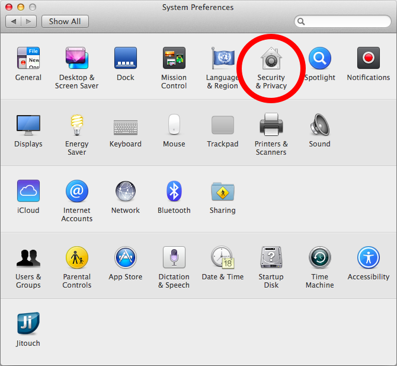
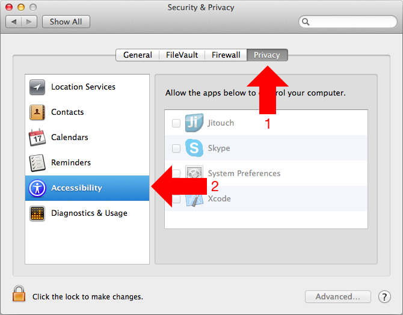
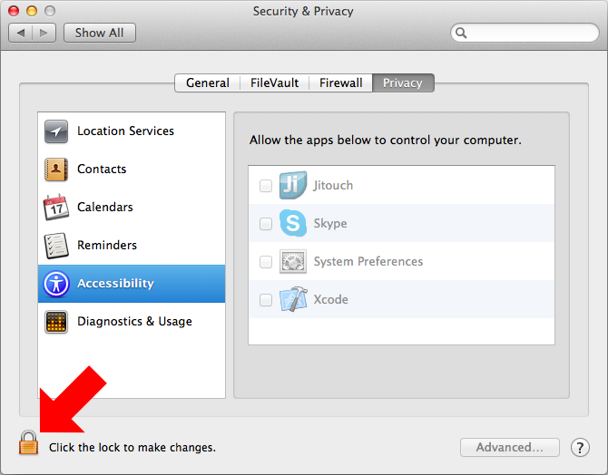
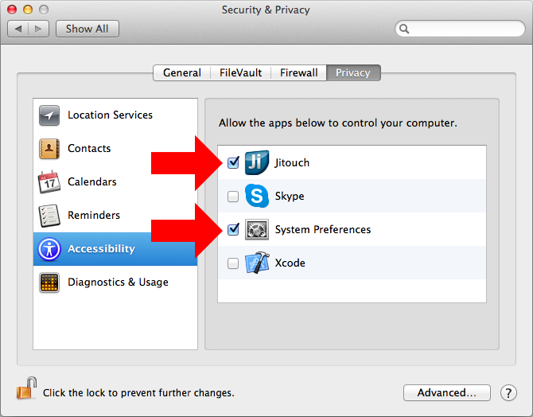

To enable jitouch,
(Steps 1 - 3 may have already been done for you.)
- Open "System Preferences"

- Click "Security & Privacy"

- Go to the "Privacy" tab and select "Accessibility"

- Click the lock icon if it is locked

- Check "Jitouch" and "System Preferences"

- Close the window